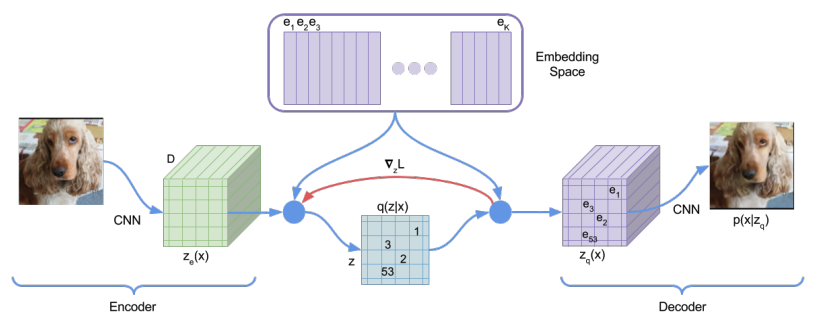
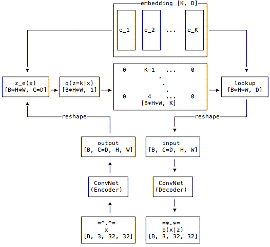
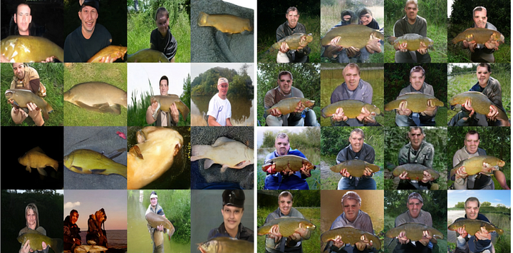

Discrete latent space, VQ-VAE
In recent reading, I noticed a model, called VQ-VAE, frequently used in latent diffusion model. It is under the framework of auto-encoder and, instead of using a continuous latent space, use a discrete latent encoding dictionary. In this post, I am going to review why it is popular and how it works.
Latent space refers to a lower-dimensional representation of the input data. It is constructed to captures the underlying structure and variations present in the data. Latent space is widely used in machine learning, especially in generative model, for several important reasons. First of all, there is a necessity to generate compressed representation of the data. In general, a modern dataset(i.e. ImageNet, CIFAR and etc) contains far more information than parameters in a model and the information at a model’s bottleneck is typically used as latent embedding. Secondly, a latent space can unify different data type(i.e. text, image, label etc) into a same latent space and make the iteration of signals more efficient. Last but the not the least, latent space is a very flexible concept and can be constructed differently(under different model architectures or objective functions) according to different goals.
With these said, what does a good latent space look like? This note summarized some good properties a good latent space should possess:
Continuity: In my understanding, this continuity is not necessary the type of continuity in mathematical sense. It simply means that the nearby points in latent space should have similar property in data space.
Disentablgement: It is often the case that there are multiple factors affecting the distribution of data. It is desireable if we can separate this variation in the latent space easily. For example, in the case of face recognition dataset(i.e. VGG Face2 etc), it would be nice if we can draw a simple line to separate male and female face and draw another line to separate different colors of skins.
Generalization: In ideal case, an unseen data should be mapped to a point in latent space where data with similar properties locate. This means that the latent space should capture the essential features and patterns of the unseen data. It can be viewed as another aspect of continuity and it plays an important role in generate realistic and diverse samples.
Compactness: Since, in most case, latent space is of much lower dimension than the data space, it should have high information density and enable efficient storage and manipulation.
For short, it is continuity and completeness that matters.
VQ-VAE is proposed in
VQ stands for vector quantised and it is a classical technique from signal processing that allows the modeling of probability density functions of prototype vectors. It was originally used for data compression. The vector quantization works by diving a large set of points(latent vectors in our cases) into groups having approximately the same number of points closest to them. Each group is represented by its centroid point as in k-means algorithm. A pytorch implementation can be fonud here.
The VQ-VAE model has the same encoder-decoder structure as VAE. In addition to these, it has an vector quantization layer that maps the embedding generated from encoder to the nearest neighbor in the codebook.

The following flowchart from the github notebook described the information flow of the model. Notice that, at the bottleneck layer, each image is mapped into a \([H, W, D]\) tensor where \(D\) is the number of channel. Each of these \(D\) dimensional vector is mapped to its nearest neighbor in the codebook.

Now, the question is how expressive this model is? How large is the size of latent space? The each image will generate \(H\times W\) hidden layer vector of \(D\) dimension. Then, each of these \(D\) dimensional vectors will be mapped into its nearest neighbor. Assume the codebook is of size \(K\times D\) where \(K\) is the number of codes in the codebook and \(D\) is the dimension of embedding. Therefore, we have \(H\times W\) entries and each of which is choosen from a set of \(K\) latent vectors from codebook. The total combination is \(K^{H\times W}\). In this case, the model is trained on CIFAR10 and \((K=256, H\times W=16384)\). The entire latent space includes \(256^{16384}\) combination which is not much different from infinite.
There are few challenging parts for training a VAE model with a vector quantization layer:
For clarification, we copy the notation from the original paper
For the training of the decoder(parameterized by \(\phi\)), the gradient information can normally pass to its parameters. For the training of the encoder(parameterized by \(\theta\)), the VQ layer blocked the gradient information. The paper chose a simple remedy for this which is use \(\frac{\partial L}{\partial z_q(x)}\) to replace \(\frac{\partial L}{\partial z_e(x)}\) in the graident \(\frac{\partial L}{\partial \theta}=\frac{\partial L}{\partial z_e(x)}\frac{\partial z_e(x)}{\partial \theta}\approx \frac{\partial L}{\partial z_q(x)}\frac{\partial z_e(x)}{\partial \theta}\).
The loss function is follow
\[L=\log p\left(x \mid z_q(x)\right)+\left\|\operatorname{sg}\left[z_e(x)\right]-e\right\|_2^2+\beta\left\|z_e(x)-\operatorname{sg}[e]\right\|_2^2.\]The sg operator represent stop gradient. These objective function is consist of three part:
Discrete latent spaces compress the information in the dataset more efficiently. Also, duo to the density matching property of vector quantisation, the latent space becomes more diverse with respect to the most diverse features within the data distribution.
